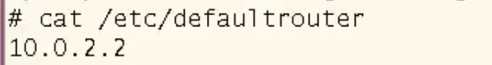

Chapter 16
Unix Networking
TCP/IP Protocol
-
TCP : Layer 4 of Internet Protocols.
Transmission Control Protocol -
IP : Layer 3 of Internet Protocols.
Internet Protocol -
ICMP : ping, traceroute
The protocol that notice the problem when processing IP packet in TCP/IP. -
UDP : Layer 4 of Internet Protocols.
User Datagram Protocol.
Less reliability and Fast speed than TCP. -
ARP : arp -a
Address Resolution Protocol.
This command checks the IP addresses and ethernet addresses (MAC addresses) of hosts in the same network. - HTTP : web protocol
- FTP : file transfer
- Telnet : remote access
- SMTP : email
-
RIP : routing protocol (Routing Information Protocol)
It is a protocol that determines the minimum hop count (shortest distance) and routes it. - DNS : name server (domain name - ip address)
-
DHCP : Dynamic Host Configuration Protocol
- ip address, netmask, default router, DNS server
It means automatically assigning name server addresses, IP addresses, and gateway addresses to computers in a network.
A dynamic address allocation protocol that leases a fixed period of time to its clients.
IP Setup

-
VirtualBox default network adapter setting
IP : 10.0.2.15 (VirtualBox Built-in ip address)
Gateway : 10.0.2.2
Netmask : 255.255.255.0 -
Interface control command
-- Interface enable/disable
# ifconfig e1000g0 up : enable
# ifconfig e1000g0 down : disable
-- Interface set/remove
# ifconfig e1000g0 plumb : set
# ifconfig e1000g0 unplumb : remove
-
IP Setup Procedure
# ifconfig e1000g0 plumb (interface set)
# ifconfig e1000g0 10.0.2.5 netmask 255.255.255.0 broadcast 10.0.2.255 (interface initializing)
# ifconfig e1000g0 up (interface enable)
# ifconfig -a (print every interface)
# route add net default 10.0.2.2 (set default gateway)
# ping 10.10.54.75 (ping test)
Network Configuration files
- /etc/hostname.e1000g0 : contains hostname (ex. sol10)
-
/etc/hosts : In Solaris, the /etc/hosts file serves to provide a mapping between IP addresses and hostnames.
This file works by associating the IP address with the network hostname used on the local system.
It is primarily used to resolve host names in environments where Domain Name System (DNS) is not used.
-
/etc/netmasks : In Solaris, the /etc/netmasks file is responsible for providing a mapping between IP addresses and subnet masks.
This file is used to assign IP addresses to subnets by defining the subnet mask of the IP network. -
/etc/defaultrouter : In Solaris, the /etc/defaultrouter file is responsible for setting the system's default router IP address.
 -
/etc/resolv.conf : In Solaris, the /etc/resolv.conf file is responsible for defining the system's Domain Name System (DNS) configuration.
-
/etc/nsswitch.conf : In Solaris, the /etc/nsswitch.conf file is responsible for defining the system's name service switch configuration.
This file determines which sources (files, NIS, LDAP, etc.) to use when the system looks up host names, user information, group information, password information, etc.
/etc/hostname.e1000g0
-
sol10
- IP address should be in /etc/hosts
or - 10.0.2.15
/etc/hosts
-
#
# Internet host table
#
127.0.0.1 localhost
10.0.2.5 sol300 sol300.snut.ac.kr loghost
/etc/netmasks
-
# Both the network-number and the netmasks are specified in
# "decimal dot" notation, e.g:
#
# 128.32.0.0 255.255.255.0
#
10.0.2.0 255.255.255.0
/etc/defaultrouter
- 10.0.2.2
/etc/resolv.conf
-
domain snut.ac.kr
nameserver 203.246.80.1
nameserver 203.246.80.5
/etc/nsswitch.conf
-
hosts: files dns
-> when the system finds an ip address of hosts of domain name,
first finds it at /etc/hosts file, next send query request to DNS server (/etc/resolv.conf)
-> if ping www.seoultech.ac.kr, then the unix system see the /etc/hosts file to resolves the ip address of www.seoultech.ac.kr,
if not exist there, then sends query to DNS server and resolves the ip address of 203.246.83.235
Network Commands
-
# arp -a
- IP address/MAC address matching cache -
# ping 10.0.2.2
- Check route to target exist and target is alive -
# traceroute 10.10.54.75
- Check route to target. Can see all router in route. -
# nslookup seoultech.ac.kr
- Domain name and IP address resolution -
# ftp 10.10.54.75
- FTP connect to 10.10.54.75 -
# telnet 10.10.54.75
- Telnet connect to 10.10.54.75 -
# telnet seoultech.ac.kr 80
- web page access
netstat
- Show network status
- # netstat -i : status of the interface
- # netstat -r : routing table